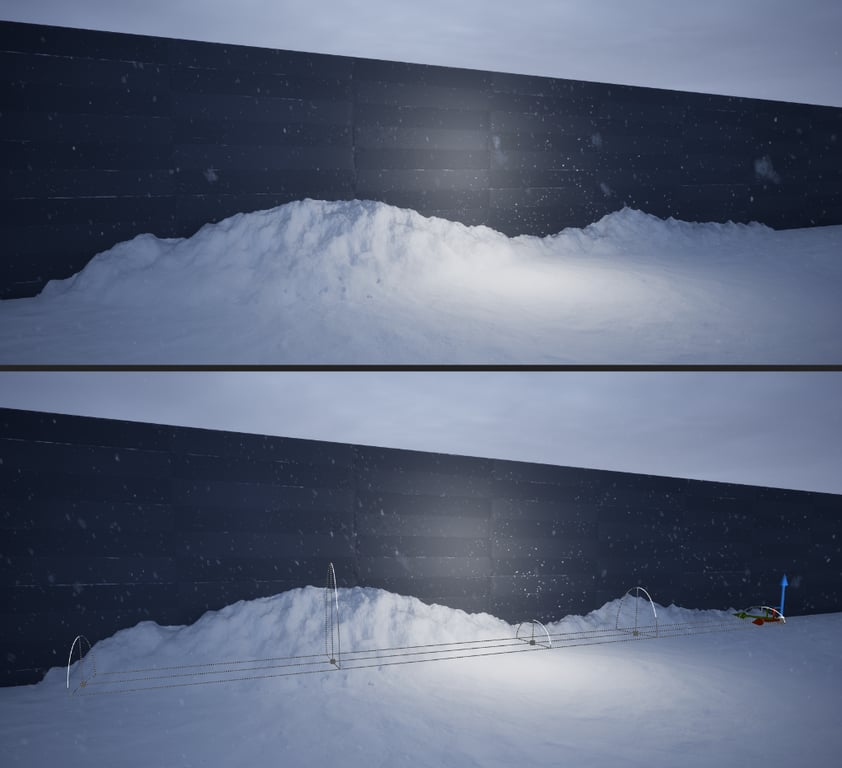

天气的其他功能
水坑与雪堆、彩虹与屏幕效果、热扭曲、天气显示控件，以及车辆车窗、滴水粒子、雨滴样条等成品组件。
用 Sequencer 做天气动画
| 要动画的对象 | 做法 |
|---|---|
| 天气状态 | 使用手动天气状态，对 Manual Weather State 分类里的变量打关键帧。 |
| 材质状态（湿润/积雪/积尘） | 先在 Material Effects 分类里关闭 Simulate Changing Material State Over Time，
否则运行时材质状态会随天气渐变，而不是按关键帧走。 |
| 云的移动 | UDS 上把 Cloud Speed 设为 0、关闭 Randomize Cloud Formation On Run，
然后在 Sequencer 里给 Cloud Phase 打关键帧。 |
| 闪电 | 把 UDW 加进序列，在它上面建 Event → Trigger 轨道；给轨道加关键帧，右键属性里把 Endpoint 的
Quick Bind 指向 Flash Lightning，即可在关键帧上配置位置、随机种子等参数。勾选 Call in Editor
可以在序列编辑器里预览闪电。 |
| 离线渲染影片 | UDS 的 Project Mode 改为 Cinematic / Offline，强制最高画质并让两个蓝图每帧完整更新。
用路径追踪出片时，另见天空部分关于 Adjust for Path Tracer 的说明。 |
水坑流体体积（Puddle Fluid Volume）
这是把水坑做成真实水面的 Actor：天气状态变化时水面会升降，适合地面上本来就有凹坑、需要被水填满的地方。 材质效果做出来的水坑只是改变粗糙度与法线的平面效果，两者用途不同。
- 可以选择用
Puddle Fluid Interactions把水面渲染成模拟涟漪的网格——DLWE 交互组件碰到水面时会产生波纹。 注意这套模拟是密集粒子网格，面积越大开销越高，建议只用于单个小水坑。 - 摆放时注意：干涸状态下水面应完全藏在地面以下。编辑器里即使干涸也会显示网格方便摆放，运行时则会隐藏。
- 面积用
Puddle Area调，也可以缩放 Actor；只能绕 Z 轴旋转。 - 水面默认是半透明材质，用 Lumen 想要好的反射效果，需要在项目设置里开启
High Quality Translucency Reflections。 - 填充/干涸的时机在
Puddle State分类；与 DLWE 交互相关的开关在Fluid Interactions分类。
雪堆样条（Snow Pile Spline）
靠墙堆积的厚雪需要真实的几何体与碰撞，材质效果做不到，这时用
Blueprints/Weather Effects 下的 Snow Pile Spline。

- 默认只在 UDW 的材质积雪覆盖大于 0 时出现，晴天看不到。
- 编辑样条改变长度与形状；右键样条可加控制点。每个点的 Z 缩放对应那一处的堆雪高度，超过 2 米效果通常就不自然了。
- 地形起伏时可以开启
Allow Vertical Curve，此时隐藏方式会从“缩放”改为“整体下移”。 - 出现/消退的速度由
Snow Form Duration、Snow Clear Duration控制； 也可以用Manual Visibility完全手动控制。 - 网格由若干样条网格段拼成，两端用静态网格封口（
Cap Start/Cap End可关）。Two Sided用于栅栏这类两侧都受天气影响的对象。 - 默认带碰撞，
Collision Enabled与坡度可行走性覆盖都可调。
把水位应用到天气
UDW 的 Water Level 分类里有 Use UDS Water Level，开启后天气相关功能会感知水位。
水位本身在 UDS 的 Water Level 分类里配置。
受影响的项：
- 天气粒子不会在水面以下生成或进入水下；
- 相机没入水面以下时，声音遮挡按完全遮挡处理；
- 屏幕水珠在水下自动关闭，出水后屏幕是湿的；
- 彩虹在水面以下会被遮掉（需开启对应选项）；
- Surface / DLWE 材质函数有输入项，可遮蔽水位以下的覆盖效果。
后期处理风雨雾
Post Process Wind Fog 在相机附近叠加一层随风与天气粒子移动的雾噪声。
它是后期效果，比用体积雾实现类似效果便宜得多；强度随当前天气状态里的雾、雨、雪、尘缩放。
遮挡方式有两种：默认使用 Weather Occlusion Volume——一张缓存相机周围“受天气影响程度”的体积纹理，
基于全局距离场计算，效果最好；也可以改为用玩家遮挡（Player Occlusion）来遮罩。
彩虹
彩虹只会在以下条件同时满足时出现：
- 有雨或雾（两者各自的贡献比例可在
Rainbow分类里调）； - 相机直接受阳光照射（受云量影响），处在阴云之下时不会出现；
- 太阳足够低、彩虹能出现在地平线以上，或者相机足够高、能俯视彩虹。
分类里还有额外的选项，控制云层之上、以及水位以下（启用 UDS 水位时）彩虹的可见性。
屏幕效果
| 效果 | 说明 |
|---|---|
Screen Droplets |
相机淋雨时屏幕上出现水珠。可调水珠纹理大小、强度，以及“正对雨的程度”对效果的影响。 |
Screen Frost |
雪天在“镜头”上结霜结冰。可由降雪、材质积雪与手动值触发，按 Form Duration /
Clear Duration 逐渐形成与消退。默认在室内不会结霜，判定用 UDS 的玩家遮挡。 |
Heat Distortion |
热浪扭曲：后期处理让远处景物产生对流状抖动。默认由当前计算出的温度驱动，也可以用
Manual Heat Distortion 手动施加。 |
天气显示控件
UDW_Current_Weather_Display（控件设计器的 Ultra Dynamic Sky Widgets 分类）
用来显示当前天气。默认显示为图标，取值来自 Get Display Name for Current Weather；
控件设置里可以改成文字显示，或改为取当前的天气预设资产。
自定义天气行为
天气预设可以附加自己的蓝图逻辑。做法是给 UDS_Weather_Settings 数据资产类建一个子类，
覆盖它的 Custom Weather Behavior 函数，然后用该子类创建你自己的预设资产。
函数有一个 Alpha 输入，表示该预设当前对本地天气状态的影响程度（0–1）。
UDW 在天气状态发生变化、且涉及该资产时调用它。
父类的实现负责应用预设上选中的 Sky Modifier。如果你覆盖函数后需要这个功能，记得在函数里调用 Parent。
滴水与呼吸粒子
| 效果 | 用法 |
|---|---|
Dripping Static Mesh / Dripping Skeletal Mesh |
Niagara 系统（Particles/Standalone），挂在静态网格或骨骼网格下，按降雨量或材质湿润度在表面产生滴水。
粒子外观沿用 UDW 的雨滴设置；如果 Actor 上有 Actor Weather Status 组件，则改用该 Actor 的本地状态驱动。 |
Freezing Breath |
角色呼出白气。组件放在嘴前，X 轴朝向呼出方向。默认按 UDW 计算的本地温度在冰点以下时出现； 角色有 Actor Weather Status 组件时，改用该组件的温度。参数可调外观与出现条件。 |
车辆车窗天气（Vehicle Window Weather）
第一人称坐在车内、或相机贴着行驶中的车辆时，用 Vehicle Window Weather 组件：
它把雨滴与雪花渲染成独立粒子，雨滴会随车速与风在玻璃上滑动，也可以让雨刷把粒子推开。
准备车窗网格
- 车窗玻璃要是独立于车身的静态网格，效果以它为采样与渲染对象。多个车窗放在一个网格里也可以， 但拆成多个网格时，每个都需要自己的组件。
- UV 不能重叠、不能非等比缩放，UV 岛之间要留一点间距。同时记下 UV 空间对应的实际尺寸（米）， 例如整张 UV 只给 1.5 米宽的挡风玻璃用，UV Scale 就是 1.5。
- 确认法线朝向：如果朝车内，组件上要勾选
Window Normal Points Inside。 - 在静态网格资产上开启
Allow CPU Access，Niagara 才能重建 UV 来驱动粒子。
接入
在车辆 Actor 里把组件挂在车窗网格下，细节面板里把 UV Channel 与 UV Scale 设成与网格一致。
这里还有粒子生成率、精灵缩放，以及“是否用碰撞判断车窗是否暴露在天气中”的开关。
让雨刷推开粒子
- 给每个雨刷网格加一个
Vehicle Window Wiper Marker组件，摆放并缩放，使方形端在转轴、尖端在雨刷末端。 - 在雨刷启停的逻辑里调用车窗组件的
Set Wipers Active， 这样系统只在雨刷工作时计算，不浪费性能。
雨滴样条与冰柱
Rain Drip Spline（Blueprints/Weather_Effects）沿一条线或曲线按降雨量滴落雨滴，
适合做屋檐滴水。拖进场景时是一条短线，编辑样条即可改长度与形状。
粒子的碰撞与外观沿用 UDW 的雨滴设置。
这条样条还可以额外开启冰柱网格，用于寒冷天气——这就是“冰柱”功能的入口。
天气遮挡体积
Weather Occlusion Volume 是一张体积纹理，以低分辨率缓存相机周围每个点“被遮挡多少”，
通过采样全局距离场计算，因此需要项目支持距离场。
Post Process Wind Fog 用它来在室内等被遮挡的空间里屏蔽雾效。